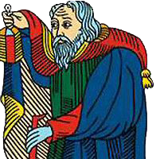

Avant tout, c’est une rencontre entre vous et le Tarot, je n’officie qu’en qualité de bon intermédiaire.

Le fait de se sentir attirer par la cartomancie, d’avoir acheté un livre ou consulté un cartomancien, constitue déjà en soi le signe d’une disposition, d’une affinité avec les cartes.
L’histoire du Tarot a produit une immense littérature riche en documents, en ouvrages de toutes sortes mis à notre disposition.
Vous pouvez commencer par une approche individuelle, mais vous serez vite limité dans vos sollicitations par une incapacité à appréhender l’ensemble et par les difficultés de s’y retrouver entre les codifications symboliques, la classification du positif et du négatif, les variantes des tirages, les assemblages, etc……..
Il ne s’agit pas non plus de participer à une cérémonie initiatique ou de se plier à des rituels particuliers dans l’attente que la connaissance illumine votre vie.
Il faut avoir certaines informations et des conseils pratiques pour s’imprégner, accéder aux « mystères » du Tarot et à l’interprétation des arcanes.
Le néophyte, le débutant qui se borne à lire ou à écouter reste à la porte de « l’esprit du Tarot », dans un dédale d’informations complexes, parfois incompréhensibles et contradictoires.
La dynamique de ma démarche concerne plus particulièrement l’interprétation et l’application pratique des 22 arcanes majeurs du Tarot de Marseille dans les principaux tirages utilisés en tarologie (de plus ces tirages procurent une détente agréable) :
1) Le tirage à une lame pour un aperçu rapide ou pour prendre la température d’un contexte journalier, il renseigne sur une action immédiate : un contrat à signer, un achat à effectuer, une direction à prendre….. et il permet de se familiariser avec le jeu.
2) Le tirage en croix pour répondre à une question précise ou évaluer un événement dans un contexte déterminé.
3) Et surtout le tirage, le plus usité par les tarologues, dit du « zodiaque » ou de « la grande roue », dont l’intérêt est de fournir une vision panoramique de tous les facteurs essentiels d’une situation personnelle durant une année environ.
Chaque arcane majeur exprime des significations que je vous dévoilerais en fonction des maisons ou de la position dans les tirages, je vous indiquerais une interprétation de divers assemblages et correspondances, je vous fournirais un outil descriptif de la structure des tirages.
Malgré une apparence décousue le Tarot est un tout homogène. C’est un langage qui engendre une lecture structurée aux bases sûres et celui-ci comme tout langage s’apprend.
Cependant, les instructions de départ relatives à l’interprétation des lames relèvent d’une transmission initiatique.
La pratique de la lecture pour soi-même est le premier vecteur de pénétration de la sphère du Tarot.
En faisant ainsi connaissance au fil des jours, le Tarot perdra peu à peu « son mystère », son langage deviendra familier.
C’est par cette manière d’auto concertation que les cartes se mettront à faire sens et que le tarologue percevra la fonction intuitive de ses qualités naturelles et un déclic de confiance en ses propres capacités.
Cet apprentissage est à la portée de tous et il est tout à fait possible d’atteindre un niveau respectable.
Néanmoins, un apprentissage implique :
-Une discipline à un rythme de travail (à sa cadence),
-Un état d’esprit d’études et de recherches à l’obtention d’un savoir,
-De se documenter et d’expérimenter le plus possible,
-D’être motivé et enthousiaste pour suivre un parcours initiatique.
On ne peut oublier que dans tout Art, c’est l’usage qui affine le talent, et il n’est pas dévalorisant de montrer que l’on a appris en étudiant.
Avec une cohérence explicative qui repose sur un aspect de simplification, de clarification du concept divinatoire du Tarot, j’aborde ce qu’il faut savoir pour rendre le jeu actif, progresser et franchir un seuil.
La conception de la compilation de mes fragments formate, c'est-à-dire prédispose à l’emploi du Tarot. Des principes pertinents de repérage apprennent le terrain et guident dans ce labyrinthe afin que cette étape vous laisse l’initiative de créer votre propre laboratoire d’études personnelles et de continuer votre exploration de la richesse du Tarot.
Petit à petit, en associant les fragments de votre savoir, le symbolisme de telle ou telle lame avec votre ressenti, vous parviendrez à l’élaboration de votre propre manuel d’interprétation, plus efficace que n’importe quel ouvrage, rédigé avec vos propres forces et vos propres croyances.
Je manifeste une réelle importance à partager l’accumulation de mes connaissances, avec ceux qui feront appel à moi.
Je transmets avec sérieux et honnêteté ce qui m’a été transmis :
L’OUVERTURE A CE SAVOIR EQUIVAUX A UNE REVELATION,